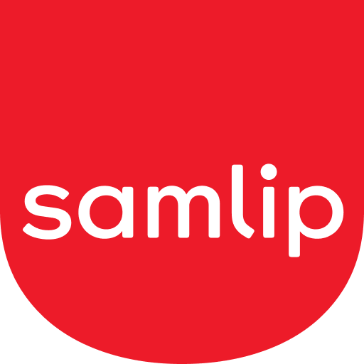

홈 > 브랜드 매거진 > SPC삼립
SPC삼립
SPC삼립(SPC Samlip)은 1945년 창업한 상미당을 모태로 하는 SPC그룹 계열의 종합 제빵·식품 기업이다.
산업 분야 식음료 · 공개 등급 자료 기반 · 브랜드 평가 4.1 ★

한눈에 보는 브랜드
SPC삼립은 대한민국을 대표하는 양산빵·종합식품 기업으로, 1945년 황해도 옹진에서 허창성 창업주가 연 작은 빵집 상미당에 뿌리를 둔다. 1959년 삼립제과공사 설립, 1968년 삼립식품공업으로 법인을 갖추며 한국 산업화 시기 식생활을 떠받쳤다.
첫 번째 전환점은 1971년 호빵 출시로 겨울 간식 시장을 창출한 것, 두 번째는 2002년 파리크라상 컨소시엄에 인수되며 SPC그룹에 편입된 사건이다. 1997년 부도와 회생을 겪은 뒤 재기해, 현재 연결 매출 3조원대 규모의 코스피 상장사로 성장했다.
브랜드 관점
SPC삼립의 본질은 공장에서 대량 생산하는 양산빵 분야의 절대 강자라는 점에 있다. 호빵·크림빵으로 대표되는 스테디셀러 포트폴리오에 더해, 2022년 포켓몬빵 재출시는 띠부씰이라는 수집형 캐릭터 부착물을 매개로 1990년대 향수와 Z세대 수집 욕구를 동시에 자극하며 사회적 신드롬을 일으켰다.
재출시 약 석 달 만에 누적 3천840만 개를 돌파했고 품귀·사재기·리셀 현상까지 번졌다. 이는 단순 제빵을 넘어 라이선스 IP를 결합한 굿즈형 식품 모델의 위력을 보여준다.
차별점은 베이커리 제조 역량과 전국 식자재 유통·물류망을 함께 쥔 수직 구조에 있으며, 매출의 절반 이상이 유통 부문에서 나온다. 전략적으로는 K-베이커리 해외 진출과 건강식문화를 축으로 글로벌 식품회사를 표방한다.
한국 독자에게 SPC삼립은 호빵 봉지의 김 서린 풍경과 편의점 빵 매대의 기억으로 각인된, 세대를 잇는 식문화 사업자다.
시작과 성장
SPC삼립의 출발점은 광복 직후 물자가 귀하던 1945년 10월, 미군이 주둔하던 황해도 옹진에서 허창성이 연 제과점 상미당이다. 미군 기지를 통해 밀가루·설탕 같은 재료를 비교적 쉽게 구할 수 있었고, 1947년에는 국내 최초로 무연탄 가마를 개발해 연료비를 낮추는 등 초기부터 제조 혁신을 시도했다.
한국전쟁 전후 서울로 거점을 옮겨 1959년 삼립제과공사를 세우고 용산공장을 가동하며 기업 형태를 갖췄다. 첫 번째 도약은 1964년 크림빵 히트와 1968년 삼립식품공업주식회사 전환으로, 산업화 시기 값싸고 든든한 양산빵 수요를 흡수했다.
두 번째 결정적 전환점은 1971년 호빵 출시로, 겨울철 따뜻한 간식이라는 새로운 시장 범주를 열며 한 시즌 매출의 큰 비중을 차지하는 효자 상품이 됐다. 이후 케이크 등으로 사업을 넓혔으나 무리한 확장으로 1997년 부도를 맞았고, 1999년 회생절차를 마친 뒤 2002년 파리크라상 컨소시엄에 인수되며 SPC그룹의 핵심 식품 계열사로 새 출발했다.
브랜드 아이덴티티
SPC삼립의 핵심 가치는 70여 년간 쌓은 전통과 장인정신 위에 젊음·혁신·친근함을 얹는 것이다. 슬로건은 '맛있는 행복'으로, 검증된 품질을 바탕으로 맛있는 음식을 통해 행복한 경험을 전한다는 의지를 담는다.
비주얼 아이덴티티는 오랜 상징색인 따뜻한 붉은색을 계승하면서 곡선미와 공간감을 살린 서체를 쓰고, 그릇 형상을 통해 성장 의지와 다양한 사업 영역을 표현한다. 타깃은 호빵·크림빵에 익숙한 중장년층부터 포켓몬빵·캐릭터 굿즈에 열광하는 어린이·MZ세대까지 전 세대를 아우른다.
브랜드 보이스는 권위적이지 않고 친근하며 향수와 즐거움을 자극하는 어조를 취한다. 경영이념상으로는 건강한 식문화를 선도하는 글로벌 식품회사를 지향하는 미래지향적 정체성을 내세운다.
제품과 서비스
빵·샌드위치·케이크 등을 만드는 베이커리, 밀가루·계란·육가공·신선식품을 다루는 식품, 식자재 유통과 단체급식·물류를 아우르는 유통 부문으로 구성된다. 대표 상품은 삼립호빵·크림빵·포켓몬빵이며, 대형마트·편의점·온라인과 직영점·휴게소, 그리고 외식·급식 사업장을 향한 B2B 식자재 채널까지 폭넓게 공급한다.
현재 상태
본사는 대한민국 서울에 두며, 코스피 상장사로 종목코드 5,610이다. 지배구조는 SPC그룹 체제로, 지주사 격인 상미당홀딩스(옛 파리크라상)가 최대주주이며 허영인 회장 일가가 지분을 보유한다.
2024년 연결 기준 매출은 약 3조4천억원, 영업이익은 약 950억원 규모다. 종업원 수 세부 수치는 미공개.
타임라인
정리된 연도형 이벤트가 없습니다.
BI/CI 변천사
함께 읽을 브랜드
 식음료 · 자료 기반동원
식음료 · 자료 기반동원동원(Dongwon)은 동원참치로 유명한 한국의 수산·종합식품 기업으로, 동원그룹 모태는 1969년 창업했다.
Be
Bezi
식음료 · 편집 검수BeziBezi는 2024년에 기록된 Food Brands 계열의 브랜드 아이덴티티 사례입니다. Red Antler가 아이덴티티 작업의 디자이너로 기록되어 있습니다. 공개...
Ce
Ceria
식음료 · 편집 검수CeriaCeria는 2022년에 기록된 Soft Drinks 계열의 브랜드 아이덴티티 사례입니다. Mother Design가 아이덴티티 작업의 디자이너로 기록되어 있습니다....
네슬레(Nestlé)는 스위스 브베에 본사를 둔 세계 최대 규모의 식음료 다국적 기업이다.
*o
*ouch*
식음료 · 편집 검수*ouch**ouch*는 2025년에 기록된 Burger Branding 계열의 브랜드 아이덴티티 사례입니다. Oker가 아이덴티티 작업의 디자이너로 기록되어 있습니다. 공개...
Ag
Agua de Madre
식음료 · 편집 검수Agua de MadreAgua de Madre는 2024년에 기록된 Soft Drinks 계열의 브랜드 아이덴티티 사례입니다. Chris Chapman가 아이덴티티 작업의 디자이너로 기록...
Am
Amatrice
식음료 · 편집 검수AmatriceAmatrice는 2025년에 기록된 Cafes, Bars & Restaurants 계열의 브랜드 아이덴티티 사례입니다. Mucho가 아이덴티티 작업의 디자이너로 기...
As
Ashton
식음료 · 편집 검수AshtonAshton는 2024년에 기록된 Fast Food 계열의 브랜드 아이덴티티 사례입니다. lg2가 아이덴티티 작업의 디자이너로 기록되어 있습니다. 로고, 타입, 컬러...